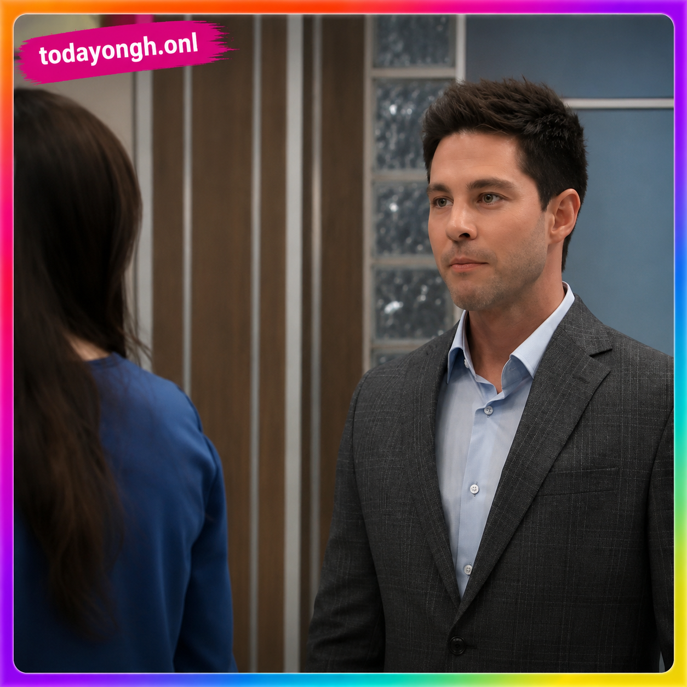
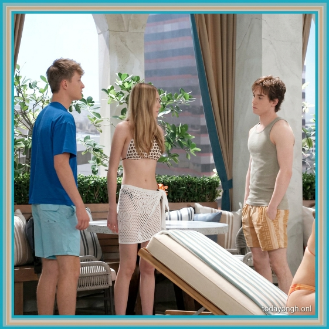
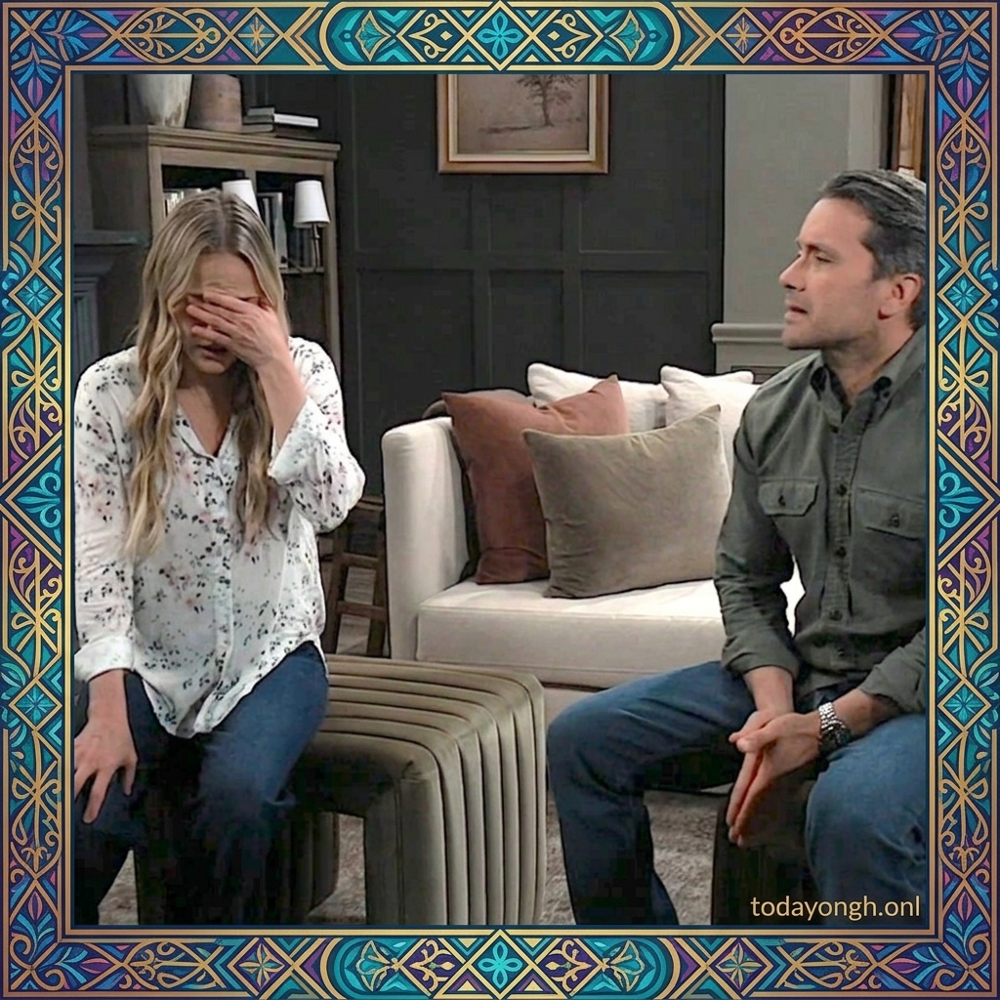
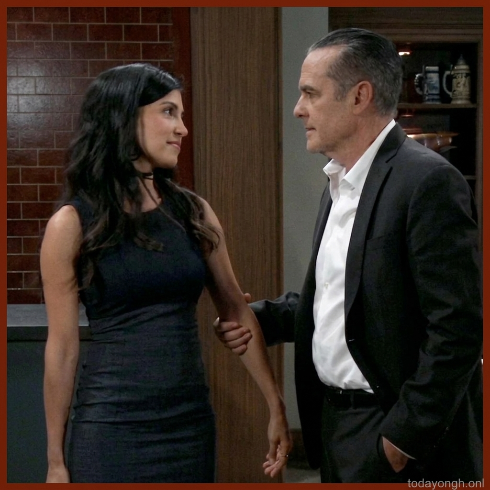
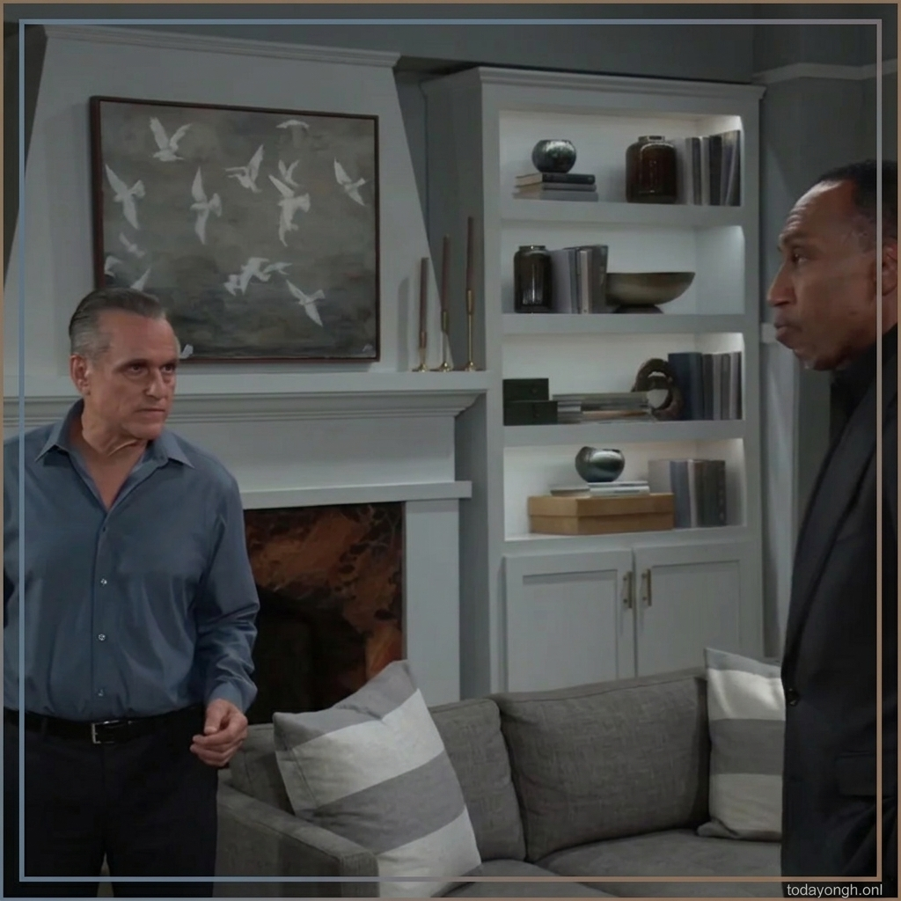
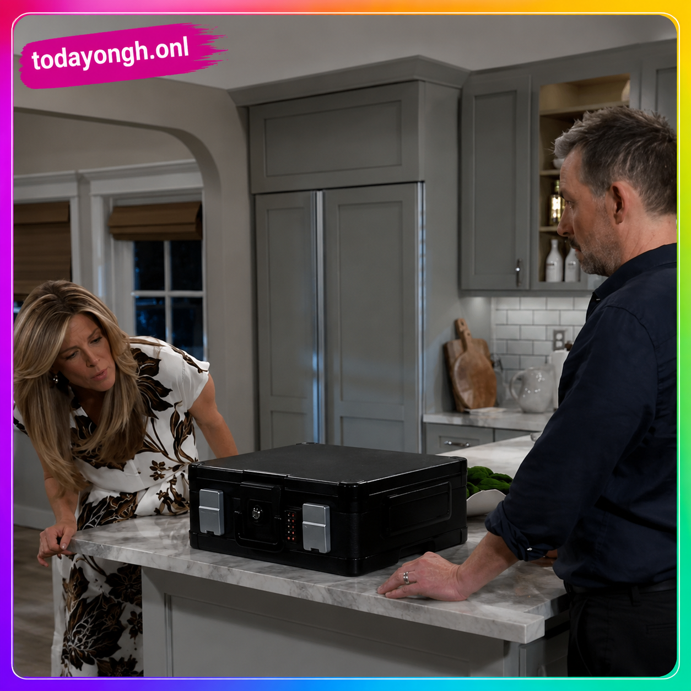
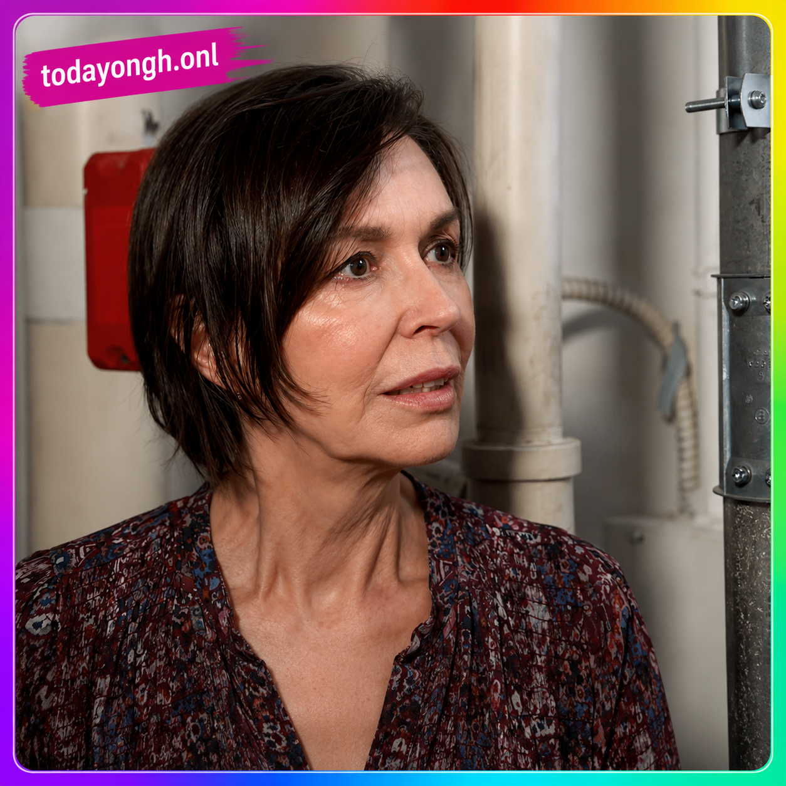

General Hospital Spoilers for Tuesday, July 21: Carly Faces a Difficult Choice as Britt Fights for Her Future

Tuesday's episode of General Hospital promises another emotional day in Port Charles as old rivalries resurface, shocking secrets threaten relationships, and several familiar faces look to reclaim what they've lost. Carly Spencer is about to receive information that could change everything she believes about Valentin Cassadine, while Britt Westbourne refuses to give up on her career at General Hospital.
Meanwhile, Sonny Corinthos finds himself at odds with ADA Justine Turner, Lulu Spencer faces more family drama, and Anna Devane returns to the PCPD with a determination to uncover the truth behind the recent chaos.
Britt Refuses to Give Up on General Hospital
Britt Westbourne isn't ready to walk away from the hospital she once called home. Determined to rebuild both her reputation and career, Britt makes another appeal to regain her position at General Hospital.
Her visit, however, quickly becomes more complicated when she crosses paths with Dr. Tristan Roberts once again. Their previous encounters have been anything but friendly, and Tuesday's episode suggests that the tension between them is only growing stronger.

Whether Tristan stands in Britt's way or eventually becomes an unexpected ally remains to be seen, but their latest confrontation could have lasting consequences for both doctors.
Carly's Advice to Charlotte Backfires
While trying to keep the peace within her extended family, Carly encourages Charlotte Cassadine to repair her strained relationship with Lulu Spencer. Unfortunately, her advice doesn't have the desired effect.

Instead of finding common ground, Charlotte and Lulu end up in yet another heated confrontation that highlights just how damaged their relationship has become.
As emotions continue to run high, Carly realizes that fixing this fractured family may be much harder than she expected.
Dante's Proposal Leaves Lulu Completely Stunned
Lulu's difficult day doesn't end with Charlotte. She also finds herself facing Dante Falconeri, who is preparing to make a proposal that she never saw coming. Although the exact details remain under wraps, spoilers suggest Dante's words will completely catch Lulu off guard.

Considering everything these two have experienced over the past several months, this unexpected conversation could reshape their relationship moving forward.
Sonny and ADA Turner Reach a Breaking Point
Elsewhere in Port Charles, Sonny Corinthos attempts to convince ADA Justine Turner to consider a different approach in dealing with his enemies. However, Turner immediately recognizes where the conversation is headed, and she isn't willing to cross any legal lines.

Her warning makes it clear that she refuses to bend the law, even for Sonny. Their disagreement may create even more tension as both continue pursuing very different ideas about justice, especially where Jenz Sidwell is concerned.
Brick Delivers Shocking Evidence About Valentin
One of Tuesday's biggest moments arrives when Brick pays Carly an unexpected visit. Following Sonny's request, Brick has gathered damaging information about Valentin Cassadine and delivers it to Carly on a flash drive. The evidence could completely change how Carly views the man she's been building a future with.

Instead of confronting Valentin immediately, Carly appears ready to keep the discovery to herself while she decides what to do next.

That decision could place her relationship on dangerous ground and create another major secret in Port Charles.
Anna Returns to the PCPD
After everything that's happened in recent weeks, Anna Devane officially returns to work at the PCPD. She immediately begins reviewing the shooting at the pier and believes Cassius Faison was responsible for Ross Cullum's death. However, Anna's investigation may not tell the whole story.

New information involving Rocco Falconeri could soon surface, threatening to change Anna's understanding of what really happened that night. As more secrets emerge, Anna's return couldn't come at a more critical time.
What to Expect Next
Tuesday's episode sets the stage for several explosive storylines. Britt's determination to reclaim her career, Sonny's growing conflict with ADA Turner, Carly's shocking discovery about Valentin, and Anna's renewed investigation all point toward even bigger drama in the days ahead.
With Carly now holding information that could destroy her relationship and Anna searching for the truth behind the pier shooting, Port Charles may be heading toward another week filled with difficult choices, unexpected betrayals, and emotional confrontations. Stay tuned to General Hospital as these stories continue to unfold.